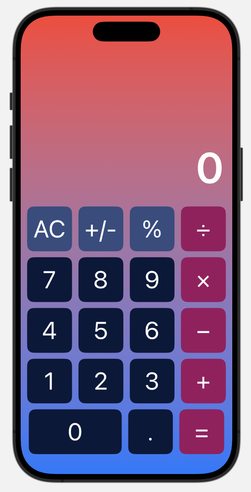

Calculator App
View the source code on GitHub
Overview
The Calculator App is an iOS app for performing numerical computations on a mobile device. I built it in Swift and SwiftUI as a way to learn Apple's declarative UI framework end to end — laying out an interface that adapts to any screen size, driving it entirely from state, and handling all of the input logic behind it. The app supports the digits 0–9, addition, subtraction, multiplication, and division, along with a decimal point, sign inversion, a percentage conversion, an all-clear, and an equals key. The full source code is shown below and is also available on GitHub.

The Calculator App running on an iPhone.
Features
Arithmetic
Addition, subtraction, multiplication, and division, with the pending operand and operator held in state until the equals key is pressed.
Decimal Input
A decimal key that appends a point to the current entry, guarded so a number can never contain two decimal points.
Sign and Percent
A +/- key that flips the sign of the displayed value, and a % key that scales it by 0.01 to convert a number to a percentage.
All Clear
An AC key that resets both the display and the stored running value, so a new calculation starts from a clean state.
Adaptive Layout
Button widths and heights are computed from the device's screen width, so the keypad fills any iPhone correctly instead of relying on fixed sizes.
Custom Styling
A red-to-blue gradient background with a custom color palette, rounded button shapes, and a large right-aligned display.
How It Works
Every button on the keypad is a case of the CalcButton enum, whose raw value is the label drawn on the key. The enum also owns its own appearance: a computed buttonColor property returns one color for the operators, another for the AC, +/-, and % keys, and a third for the digits, so the visual grouping of the keypad falls directly out of the model rather than being hard-coded into the view.
The keypad itself is declared as a two-dimensional array of those cases and rendered with nested ForEach loops inside a VStack of HStacks, which means adding or rearranging a key is a one-line change to the array. Because the zero key spans two columns, buttonWidth(item:) computes its width as twice a normal key plus the spacing between them, while every other key gets one quarter of the available width.
The app's behavior lives in a small amount of state: the string currently on screen, the stored operand, and the pending operation. Because these are marked @State, SwiftUI re-renders the display automatically whenever they change — there is no manual UI updating anywhere in the code. A single didTap(button:) method handles every key press: pressing an operator saves the displayed value as the running number, records which operation is pending, and clears the display for the next operand; pressing equals applies the pending operation to the running number and the current entry; and pressing a digit either replaces a leading zero or appends to the entry already being typed.
Built With
- Swift — the app's logic, including the button model and the calculation engine.
- SwiftUI — the declarative interface, state management, and layout.
- Xcode — project configuration, the SwiftUI preview canvas, and the iOS Simulator used for testing.
Source Code
ContentView.swift contains the color palette, the button model, the keypad layout, and all of the calculation logic.
//
// ContentView.swift
// Calculator
//
// Created by Beth Lindenbaum on 12/27/24.
//
import SwiftUI
let lightPink = Color(red: 255/255, green: 182/255, blue: 193/255)
let blushPink = Color(red: 254/255, green: 130/255, blue: 140/255)
let darkPink = Color(red: 170/255, green: 51/255, blue: 106/255)
let darkLavender = Color(red: 115/255, green: 79/255, blue: 150/255)
let periwinkle = Color(red: 167/255, green: 199/255, blue: 231/255)
let saphireBlue = Color(red: 65/255, green: 105/255, blue: 225/255)
let royalBlue = Color(red: 150/255, green: 222/255, blue: 209/255)
let pink = Color(red: 255/255, green: 192/255, blue: 203/255)
let mauve = Color(red: 135/255, green: 76/255, blue: 98/255)
let customMauve = Color(red: 145/255, green: 76/255, blue: 108/255)
let pastelPink = Color(red: 255/255, green: 209/255, blue: 220/255)
let fuchsia = Color(red: 100/255, green: 0/255, blue: 100/255)
let hotPink = Color(red: 255/255, green: 105/255, blue: 180/255)
let dustyRose = Color(red: 201/255, green: 135/255, blue: 135/255)
let rose = Color(red: 255/255, green: 0/255, blue: 127/255)
let pink2 = Color(red: 231/255, green: 84/255, blue: 128/255)
let flamingo = Color(red: 252/255, green: 142/255, blue: 172/255)
let mauvelous = Color(red: 239/255, green: 152/255, blue: 170/255)
let schaussPink = Color(red: 255/255, green: 145/255, blue: 175/255)
let darkBlue = Color(red: 0.2, green: 0.3, blue: 0.5)
let veryDarkBlue = Color(red: 0, green: 0, blue: 90/255)
let pinkishRed = Color(red: 0.8, green: 0.2, blue: 0.4)
let spaceCadet = Color(red: 21/255, green: 40/255, blue: 82/255)
let maastrichtBlue = Color(red: 8/255, green: 24/255, blue: 58/255)
let jazzberryJam = Color(red: 156/255, green: 15/255, blue: 95/255)
let backgroundGradient = LinearGradient(
colors: [Color.red, Color.blue],
startPoint: .top, endPoint: .bottom)
let circleGradient = AngularGradient(colors: [.blue, .purple, .pink, .red, .pink, .purple, .blue], center: .center)
enum CalcButton: String{
case one = "1"
case two = "2"
case three = "3"
case four = "4"
case five = "5"
case six = "6"
case seven = "7"
case eight = "8"
case nine = "9"
case zero = "0"
case add = "+"
case subtract = "−"
case multiply = "×"
case divide = "÷"
case equal = "="
case clear = "AC"
case decimal = "."
case percent = "%"
case negative = "+/-"
var buttonColor: Color{
switch self{
case .add, .subtract, .multiply, .divide, .equal:
return jazzberryJam
case .clear, .negative, .percent:
return darkBlue
default:
return maastrichtBlue
}
}
}
enum Operation {
case add, subtract, multiply, divide, none
}
struct ContentView: View {
@State var strValue = "0"
@State var numValue = 0
@State var runningNumber: Double = 0
@State var currentOperation: Operation = .none
@State var decimalTapped = false
@State var negativetapped = false
let buttons: [[CalcButton]] = [
[.clear, .negative, .percent, .divide],
[.seven, .eight, .nine, .multiply],
[.four, .five, .six, .subtract],
[.one, .two, .three, .add],
[.zero, .decimal, .equal],
]
var body: some View {
ZStack
{
backgroundGradient.edgesIgnoringSafeArea(/*@START_MENU_TOKEN@*/.all/*@END_MENU_TOKEN@*/)
VStack {
Spacer()
// Text display
HStack{
Spacer()
Text(strValue)
.foregroundColor(.white)
.bold()
.font(.system(size: 80))
}
.padding()
//Buttons
ForEach(buttons, id: \.self) { row in
HStack(spacing: 12){
ForEach(row, id: \.self) { item in
Button(action: {
self.didTap(button: item)
}, label: {
Text(item.rawValue)
. font(. system(size: 45))
.frame(width: self.buttonWidth(item: item), height: self.buttonHeight())
.background(item.buttonColor)
.foregroundColor(.white)
.clipShape(RoundedRectangle(cornerRadius: 12))
})
}
}
.padding(.bottom, 3)
}
}
}
}
func didTap(button: CalcButton) {
switch button {
case .add, .subtract, .multiply, .divide, .equal:
switch button {
case .add:
self.currentOperation = .add
self.runningNumber = Double(self.strValue) ?? 0
print("self.runningNumber: \(self.runningNumber)")
case .subtract:
self.currentOperation = .subtract
self.runningNumber = Double(self.strValue) ?? 0
case .multiply:
self.currentOperation = .multiply
self.runningNumber = Double(self.strValue) ?? 0
case .divide:
self.currentOperation = .divide
self.runningNumber = Double(self.strValue) ?? 0
case .equal:
let runningValue = self.runningNumber
let currentValue = Double(self.strValue) ?? 0
switch self.currentOperation {
case .add:
self.strValue = "\(runningValue + currentValue)"
case .subtract:
self.strValue = "\(runningValue - currentValue)"
case .multiply:
self.strValue = "\(runningValue * currentValue)"
case .divide:
self.strValue = "\(runningValue / currentValue)"
case .none:
break
}
default:
break
}
if button != .equal {
self.strValue = "0"
}
case .percent:
let newNum = 0.01 * (Double(self.strValue) ?? 0)
self.strValue = "\(newNum)"
print("self.strValue: \(self.strValue)")
case .clear:
self.strValue = "0"
runningNumber = 0
case .decimal:
if (!self.strValue.contains(".")) {
self.strValue = "\(self.strValue)."
}
case .negative:
var tempValue = Double(self.strValue) ?? 0
tempValue *= -1
self.strValue = "\(tempValue)"
default:
let number = button.rawValue
if (self.strValue == "0") {
strValue = number
}
else {
self.strValue = "\(self.strValue)\(number)"
print("self.strValue: \(self.strValue)")
}
}
}
func buttonWidth(item: CalcButton) -> CGFloat {
if (item == .zero) {
return 2 * (UIScreen.main.bounds.width - (4*12)) / 4
}
return (UIScreen.main.bounds.width - (5*12)) / 4
}
func buttonHeight() -> CGFloat {
return (UIScreen.main.bounds.width - (5*12)) / 4
}
}
#Preview {
ContentView()
}
CalculatorApp.swift is the app's entry point, which creates the window group and loads the main view.
//
// CalculatorApp.swift
// Calculator
//
// Created by Beth Lindenbaum on 12/27/24.
//
import SwiftUI
@main
struct CalculatorApp: App {
var body: some Scene {
WindowGroup {
ContentView()
}
}
}